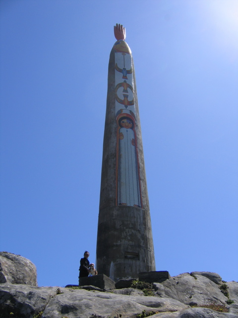

<--Previous Up Next-->

The Expanding Universe (east side)
The landward side of the statue. Bufano had intended the head and hand which now face the ocean to face inland, but they were installed backwards in his absence. He and another artist, Anthony Stellon, one of Huxley's favorites, added the face on this side later.